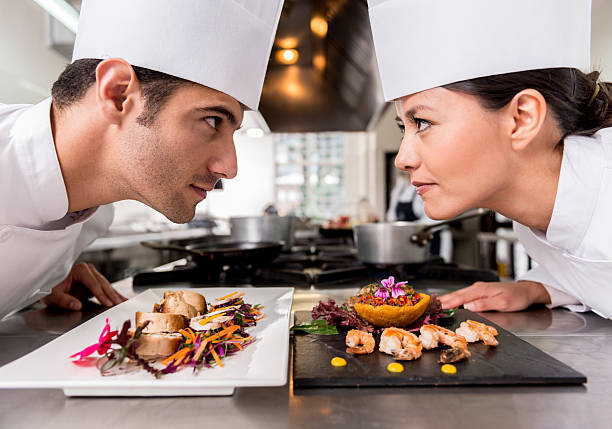

Había una vez una familia italiana que amaba cocinar y comer platos tradicionales de su país. Uno de sus favoritos era la lasaña, que preparaban en dos versiones diferentes: la lasaña a la boloñesa y la lasaña vegetariana.
Para la lasaña vegetariana, utilizaban una salsa de carne de res cocida a fuego lento con tomates, zanahorias, cebollas y apio. La salsa se mezclaba con capas de pasta de lasaña, queso ricotta y queso parmesano, y se horneaba hasta que estaba dorada y burbujeante. El resultado era un plato lleno de sabor y textura, que se convertía en el centro de atención de cualquier reunión familiar.
Para la lasaña vegetariana, utilizaban una mezcla de verduras frescas y sabrosas, como zanahorias, calabacines, espinacas y champiñones, que se salteaban con ajo y cebolla. Las verduras se mezclaban con capas de pasta de lasaña, queso ricotta y queso parmesano, y se horneaba todo junto hasta que estaba dorado y crujiente. El resultado era un plato saludable y delicioso que todos disfrutaban.
Desde entonces, la lasaña se ha convertido en un plato popular en todo el mundo, y ha evolucionado para incluir una variedad de ingredientes y combinaciones de sabores. Ya sea la versión tradicional a la boloñesa, o la versión vegetariana, la lasaña sigue siendo un plato versátil y delicioso que todos pueden disfrutar.
CONCURS DE CUINA
CONCURS DE CUINA

T'agrada cuinar i passar-ho bé? Aquí tenim el concurs de cuina més esperat
de la temporada. Tot tipus de plats i formes
- 500 gramos de ensalada
- 1 cebolla picada
- 2 ramas de apio picadas
- 1/2 taza de leche
- 12 hojas de pasta de lasaña cocida al dente
Preparació
1. En una sartén grande, calienta el aceite de oliva y saltea el vegano hasta que esté dorada.
2. Mientras tanto, en una sartén grande, saltea el pollo en aceite de oliva hasta que esté dorado.
3. Agrega el pimiento rojo, la cebolla y el ajo y saltea todo junto durante unos minutos, hasta que las verduras estén tiernas.
4. Agrega la cebolla, la zanahoria, el apio y el ajo, y saltea todo junto durante unos minutos, hasta que las verduras estén tiernas.
5. Agrega los lacitos cocidos a la sartén y mezcla todo junto para que se integren los sabores. Sirve caliente y disfruta.
6. Agrega los tomates pelados, la pasta de tomate, el vino tinto y el caldo de pollo a la sartén.